互惠动态
|
|
无人看管的孩子 +无人辅导的学习+漫长的暑假=？
孩子是独自留守在家里，看电视，玩电脑游戏，过得很没意义？
满满的暑假作业包围，一个暑假过得比上学还忙？
参加各种补习、培训、特长班，可收获甚少？
大人工作忙碌，无人陪伴，不放心孩子一个人出游？
……
再看看外国孩子的暑假，是不是有点小羡慕呢？
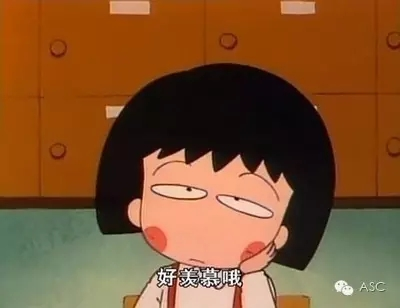
美国孩子的暑假相当长，因地域差别为一个半月至三个月不等。美国孩子的假期生活通常不是纯粹的休息和玩乐，大部分人会安排相当一部分时间来学习、工作，或是从事社区服务。除了做义工之外，打工挣钱可以算是学生们最传统也最实际的暑期活动了。中学生热衷去麦当劳做汉堡、送比萨饼、卖报等等。学生们利用暑假接触社会，学习掌握求生技能，挣钱攒学费或买玩具，这些都是美国家长鼓励、孩子们也愿意选择的。
法国的部分学校在暑假变成孩子们的“娱乐中心”。除了周末，整个暑假期间天天开放，所有不外出度假的学生随时可以来活动。“娱乐中心”安排的暑期活动是纯娱乐的，除了在学校里游戏，孩子们还被带着过“自然日”（如去植物园骑车、去郊区农场参观）、过“文化日”（如参观自然博物馆、看电影）、过“发现日”（如参观科技展览、学做中国菜）等。
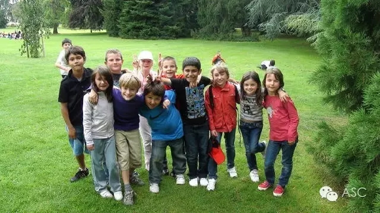
在德国，未成年人没有监护就外出旅游是不被允许的。因此，德国孩子假期主要活动是去牧场、农庄度假，放松身心、开阔视野。组织这类活动，除了班级负责老师及学科专业老师外，还需配有专门医生以保障孩子安全。德国的孩子尽管旅行愿望强烈，但绝大多数都只能盼着父母休假带自己外出旅行。
暑假对于澳大利亚小学生来说是轻松的。他们没有“假期作业”，所以大多数时间会和兄弟姐妹或同学一起玩耍，或是参加个人喜爱的户外体育活动，有些还会跟着父母出游。海滩游泳冲浪、博物馆参观、郊外野营都是澳大利亚孩子们喜欢的过暑假方式。
每年夏季，俄罗斯风景宜人的度假村或疗养院都会举办名目繁多的夏令营，如外语、音乐、戏剧、体育、文学等夏令营，甚至还有教授孩子们理财、做生意、管理国家的夏令营。
一些家长会在暑假期间安排全家外出度假，带领孩子游览历史文化古迹。另外还有一些家庭前往郊区自己的乡间别墅度假。俄罗斯普通人的别墅不是很豪华，但是充满了自然情趣。家长们会让孩子在这里做一些力所能及的体力活，比如种菜、收获水果、照顾小动物、给小鸟安装过冬的小木屋、修理篱笆和蓄水池等等。
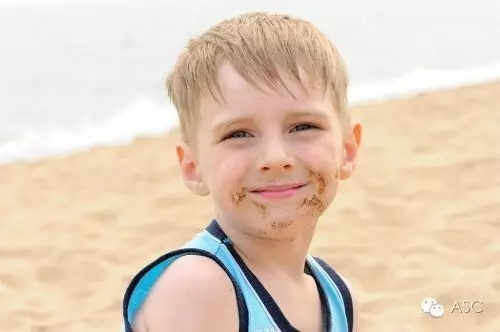
加拿大的孩子暑期可以参加教育局、社区、各种机构安排的社会活动和夏令营，包括体育、音乐、绘画、舞蹈、表演、科学等各种门类。中学生可以去划独木舟、探险、学习驾车，或者参加社区活动、旅游、打工等。孩子们热衷于参加义务劳动，包括学习辅导、环境保护、家务劳动、帮助残疾人、为患者服务等项目，体验社会，培养服务意识和能力。
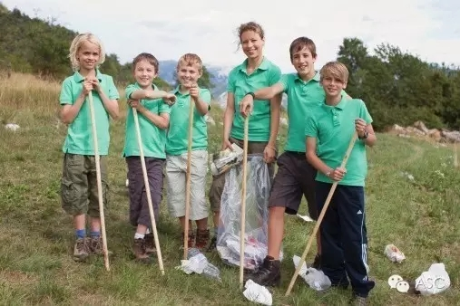
看完外国孩子的暑假，真心羡慕。不让家长犯愁，不让学生无奈，不让老师担忧，中国孩子可以这样过暑假:
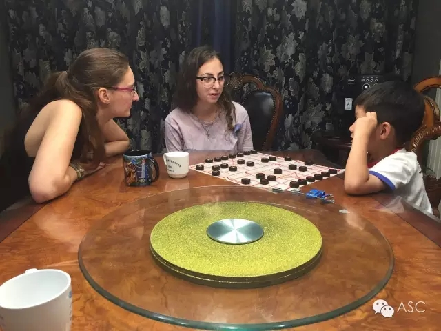
我们一起开动脑筋下象棋，看看谁更厉害？
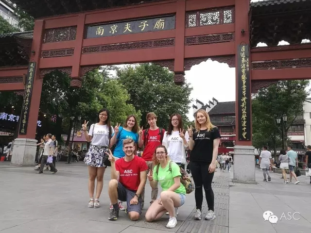
哈哈哈，一起游遍大南京！
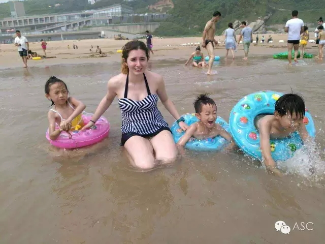
炎炎夏日，让我们来清凉一下。
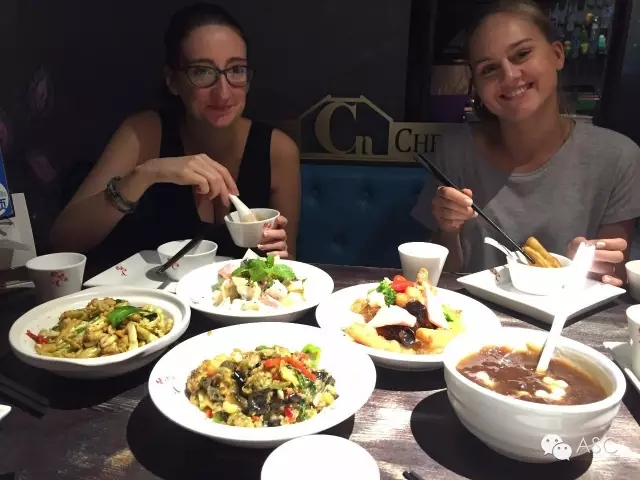
我是吃货，我骄傲。
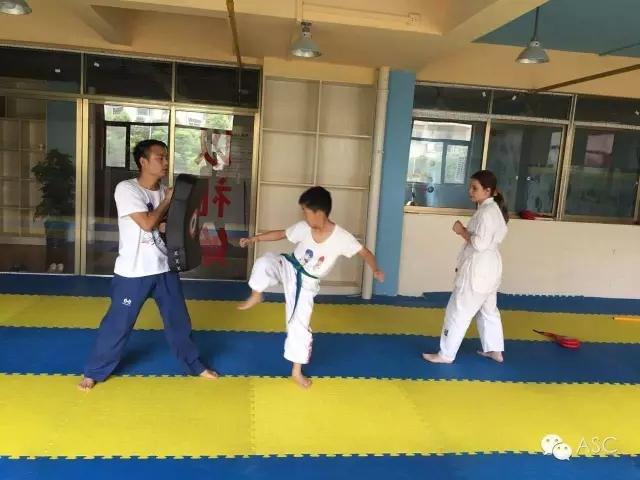
来吧，我要和你一比高下！
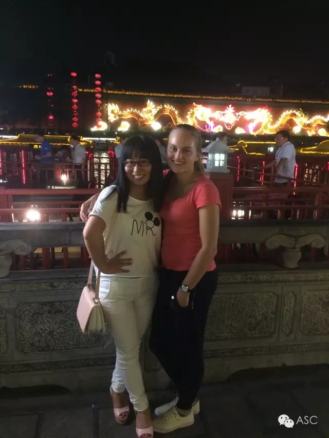
炎炎夏日，也挡不住我们夜游夫子庙的脚步。
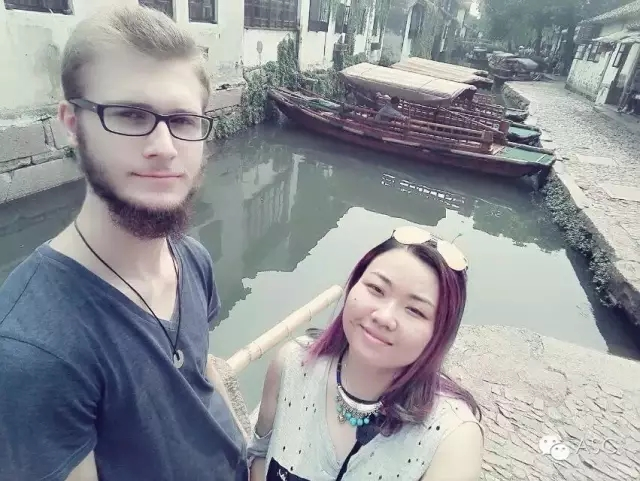
帅哥陪伴，心情美美哒！
心动不如行动，想要给孩子一个与众不同的暑假吗？赶快申请我们的互惠生吧！

关于互惠，您了解得够多么？
请外国学生来家庭照顾孩子，辅导孩子外语？
只了解这些是不够的！
获取更多信息请参考以下方式：
联系ASC：
电话：86-21-61116069(上海中心）
86-25-66065662（南京中心）
全国家庭均可申请！
手机：15601666586（可加微信）
Q Q：3259637585
微信：asc-center
邮箱：info@asc-center.com
网站：www.asc-aupair.com

感谢您对我们的关注